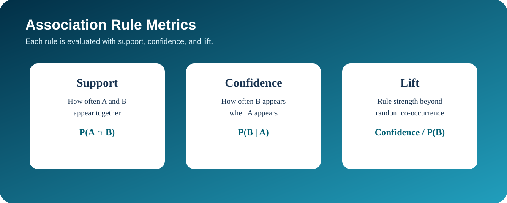
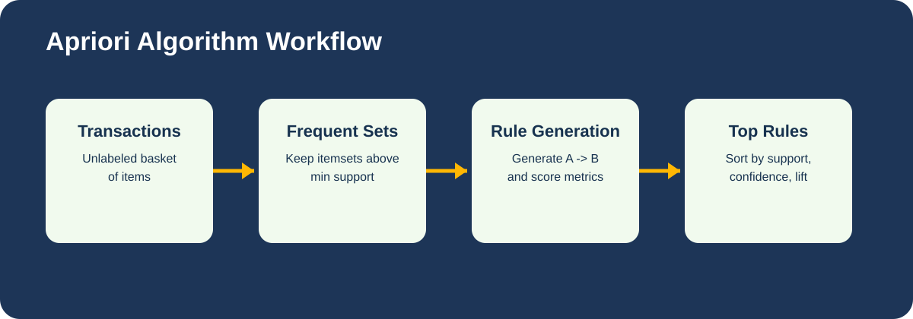
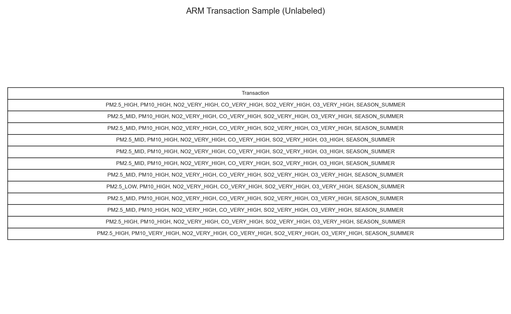
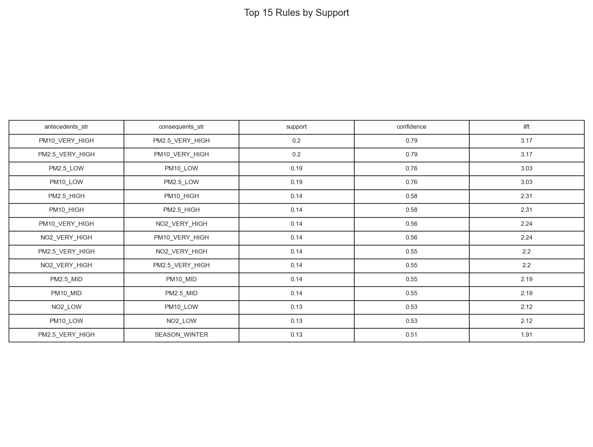
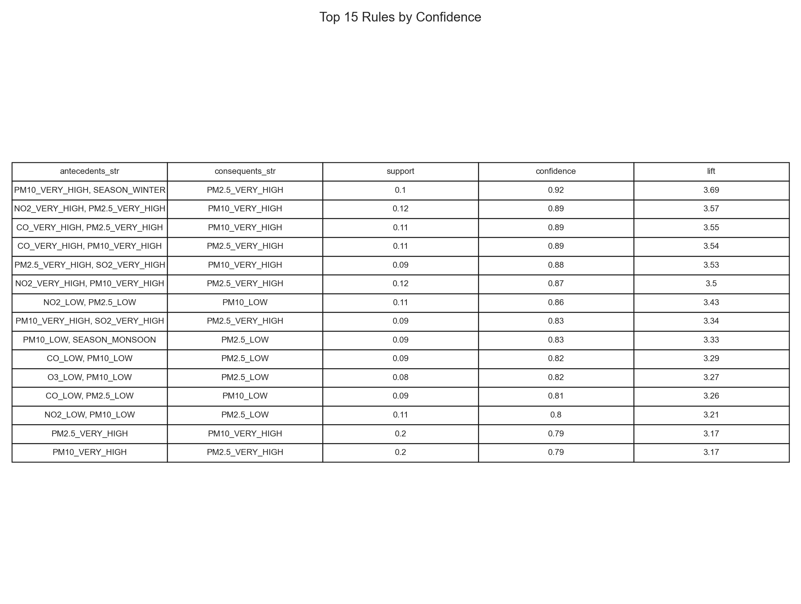
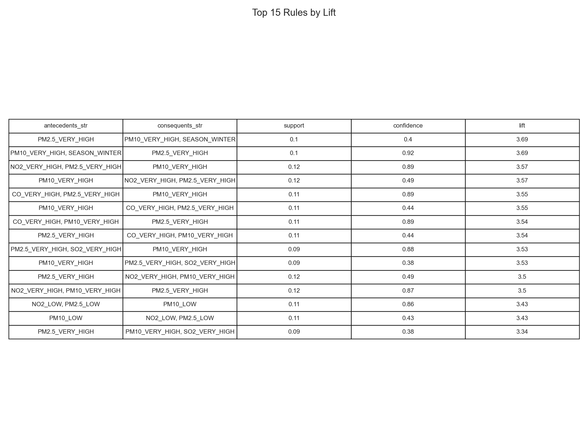
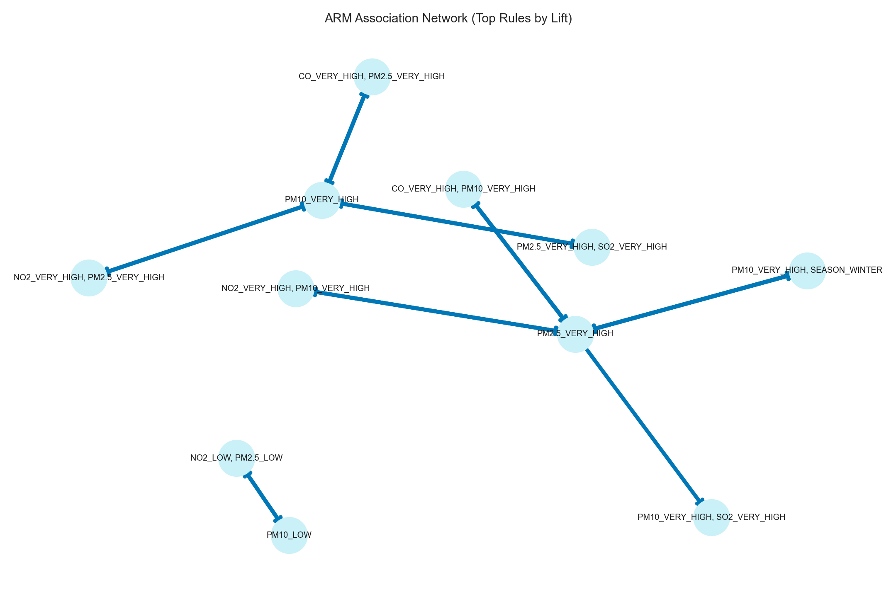

Association Rule Mining (ARM) discovers co-occurrence patterns in transaction-style data and represents them as rules of the form A -> B. Support measures how frequently itemsets appear, confidence measures how often B occurs when A occurs, and lift measures whether the rule is stronger than chance. Apriori works by first finding frequent itemsets above a support threshold, then generating candidate rules and filtering them by confidence and lift.


ARM requires unlabeled transaction data, so I converted each row into a transaction of discretized pollutant items (for example PM2.5_HIGH) plus season tags. No prediction label is used in this format.

ARM was coded in Python using mlxtend with Apriori and rule generation. Full script: module2_unsupervised.py.
Thresholds used: min support = 0.08, min confidence = 0.35. The run produced 114 rules from 16,408 transactions.




ARM reveals which pollutant categories and seasons tend to appear together, which helps explain recurring pollution regimes instead of just individual measurements. In this AQI context, the rules can help identify combinations of conditions that repeatedly co-occur with poor air quality patterns.